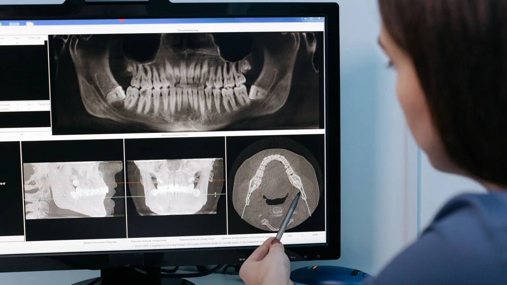

Laser & Digital Dentistry
Better information, and no tray of putty.
Two pieces of technology do most of the work behind the scenes here: an intra-oral scanner and a 3D cone beam scanner. Neither is treatment in itself. Both make treatment easier to plan, more accurate to deliver and, in the case of the scanner, considerably more comfortable to sit through.

Digital intra-oral scanning
A small handheld wand is passed over your teeth and builds a three-dimensional model on screen in a few minutes. For most patients it replaces the tray of impression putty entirely.
If you have a strong gag reflex, that alone is worth a great deal. There is no material setting in your mouth, no tray pressing against the palate, and the scan can be paused at any point.
Accuracy is the other benefit. A conventional impression can distort slightly as the material sets or as it travels to the laboratory. A digital scan is sent electronically without a physical model in between, which removes those variables from the fit of crowns, bridges, dentures, night guards and mouthguards.
It also makes a useful record. Comparing a scan taken today with one from two years ago shows tooth wear, gum recession and drift far more clearly than memory or notes.
We still use conventional impressions in the small number of situations where they give a better result, and we will tell you when that is the case.
3D cone beam (CBCT) imaging
Cone beam computed tomography produces a three-dimensional image of the jaw, teeth and surrounding structures.
There are questions a flat X-ray cannot answer. How much bone width is available for an implant. Exactly where the nerve canal runs. Whether a root sits against the sinus. How many canals a molar has and what shape they are. Where an unerupted tooth is positioned relative to its neighbours.
Having that information before starting is what keeps procedures predictable. It is used here mainly for implant planning, for assessing complicated roots before root canal treatment, and for planning surgical extractions.
Radiation, and using it responsibly
CBCT delivers a higher radiation dose than a standard dental X-ray. That is the reason it is not used routinely.
A scan is taken where there is a specific clinical question that a two-dimensional image cannot answer, and where the answer will change what we do. Dr Meg will explain what she is looking for and why before any scan is taken. Where a standard X-ray will do the job, that is what we take.
Seeing what we see
Both scans display on screen, and you are welcome to look. Most people find a decision easier to make when they can see the problem rather than being told about it.
Frequently asked questions
No. The intra-oral scanner simply passes over the teeth. A CBCT scan involves sitting or standing still for under a minute and nothing touches you.
For most restorative work a well-taken digital scan gives an excellent result and removes the discomfort of putty. In a small number of situations a conventional impression remains the better option, and we will use one where that is the case.
Because some questions cannot be answered in two dimensions — bone width, nerve position, root anatomy. Where a standard X-ray answers the question, we take one instead.
It uses a higher dose than a standard dental X-ray, which is why it is taken only where clinically justified. The reason for any scan is explained to you first.
Tell us before any imaging. Non-urgent radiography is generally deferred during pregnancy, and we will discuss timing with you.
Yes. Records can be provided to you or sent to another practitioner on request.